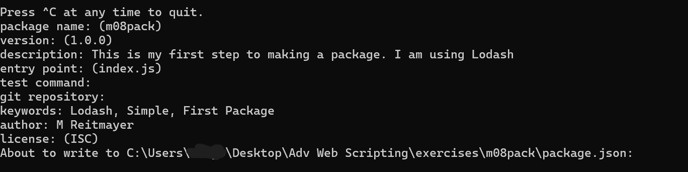
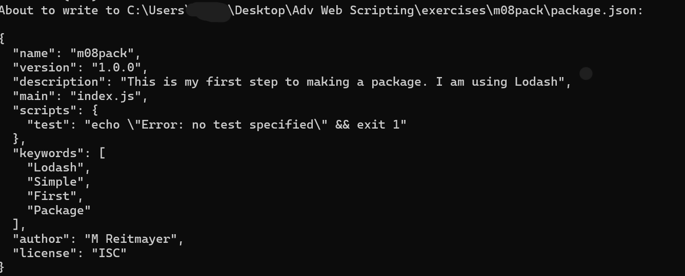
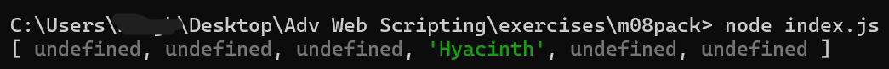
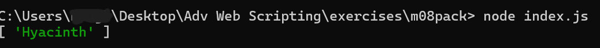
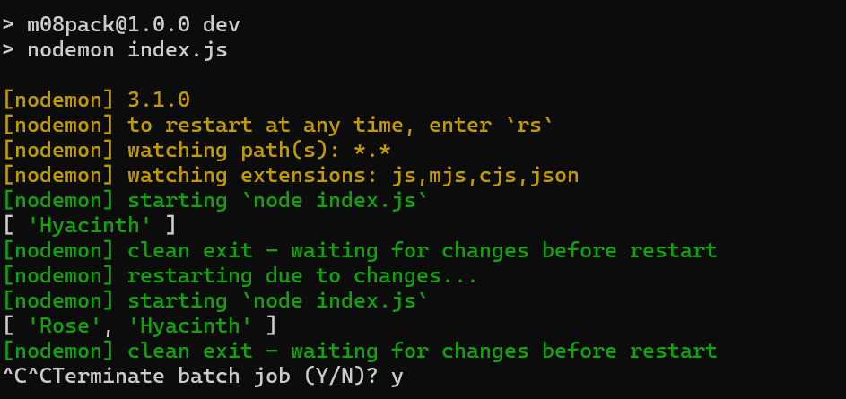

Installing Packages
This was the code for the package I created. I had to created the name, the version, what code the package is loading, keywords for the package, and my name. It created a file called "package.json"
This is the code that was put in package.json
index.js
// JavaScript Document
"use strict"
const _ = require('lodash');
var $array01 = ['Rose', 'Tulip', 'Orchid', 'Hyacinth', 'Lily', 'Daffoldil'];
var $array02 = ['Poppy', 'Sunflower', 'Hyacinth', 'Bellflower', 'Cactus', 'Rose'];
// Javascript code
//var $result = [];
//
//for (let i = 0; i < $array01.length; i++) {
//if ($array02.indexOf($array01[i] !== -1)) {
//let indexpos = $array02.indexOf($array01[i]);
//$result.push($array02[indexpos]);
//}
//}
//console.log($result);
// Lodash
console.log(_.intersection($array01,$array02));
This is what my package is doing! The code is trying to see which parts in both arrays are the same! In this case, it would be "Rose" and "Hyacinth". We are using the dependency Lodash to achieve this!
Vanilla JS
Lodash
This showcases the difference between vanilla JavaScript and Lodash.
package.json
{
"name": "m08pack",
"version": "1.0.0",
"description": "This is my first step to making a package. I am using Lodash",
"main": "index.js",
"scripts": {
"start": "node index.js",
"dev": "nodemon index.js"
},
"keywords": [
"Lodash",
"Simple",
"First",
"Package"
],
"author": "M Reitmayer",
"license": "ISC",
"dependencies": {
"lodash": "^4.17.21"
},
"devDependencies": {
"nodemon": "^3.1.0"
}
}
This is what my package is doing! We installed nodemon, which allows you to change the code in real time! Because of this code, if we were to type in "npm start" it will use the command "node index.js". If we were to type in "npm run dev", it will use the command "nodemon index.js". node index.js would run the script once, so if you were to make any changes, it wouldn't show until you reset, while nodemon index.js lets the code run in real time. Whatever updates you put in the code, it will show up in the code
Nodemon Example
This is what happened when I ran the dev code. In the original array, it did not have 'Rose' in both arrays, so I added it and it updated the code in real time.